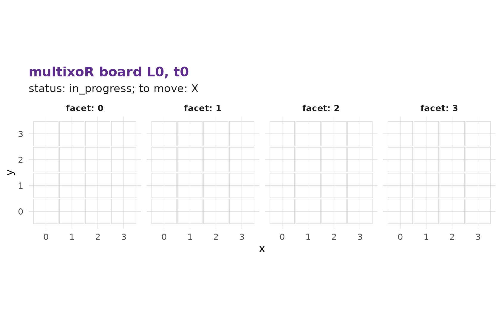

1. The board and the five axes
Source:vignettes/articles/tutorial-1-the-board.Rmd
tutorial-1-the-board.RmdThis is the first page of a six-part tutorial on how to play multixoR, a five-dimensional, multiverse variant of tic-tac-toe. We start with the question every player asks first: where, exactly, am I placing my marks?
install.packages("remotes")
remotes::install_github("r-heller/multixoR")
library(multixoR)The spatial cube
A single multixoR board is not a 3x3 grid. It is a 4x4x4
cube of 64 cells. Three of the game’s five axes are
these spatial axes – x, y, and
z.
Every game carries its geometry with it. The default configuration is
the canonical 4^3 cube with a winning-line length of
k = 3:
g <- mxo_new_game()
mxo_config(g)
#> $n
#> [1] 4
#>
#> $d_spatial
#> [1] 3
#>
#> $k
#> [1] 3
#>
#> $ply_cap
#> [1] 60
#>
#> $max_timelines
#> [1] 32The engine is generic over (n, d_spatial, k) – nothing
in the rules hard-codes the number 4 – but the canonical cube is the
default, and the one this tutorial uses.
The cell index
Rather than typing three coordinates for every move, multixoR
addresses each cell of the cube with a single integer idx
in 0..63. The mapping is
\texttt{idx} = x + n\,y + n^2 z \qquad (n = 4),
so x runs fastest. A few examples:
n <- 4L
cells <- expand.grid(x = 0:(n - 1), y = 0:(n - 1), z = 0:(n - 1))
cells$idx <- with(cells, x + n * y + n^2 * z)
head(cells[order(cells$idx), c("idx", "x", "y", "z")], 8)
#> idx x y z
#> 1 0 0 0 0
#> 2 1 1 0 0
#> 3 2 2 0 0
#> 4 3 3 0 0
#> 5 4 0 1 0
#> 6 5 1 1 0
#> 7 6 2 1 0
#> 8 7 3 1 0So idx = 0 is the corner (0,0,0),
idx = 1 is (1,0,0), idx = 16 is
(0,0,1) – one step along z – and
idx = 63 is the far corner (3,3,3).
Seeing the cube
mxo_plot_board() draws one board. The default
"slices" view unfolds the cube into its four
z-layers, which is the easiest way to read a position:
mxo_plot_board(g, L = 0L, t = 0L)
#> Warning: No shared levels found between `names(values)` of the manual scale and the
#> data's colour values.
The "cube" view renders the same board as an interactive
3-D plotly object – drag to rotate it:
mxo_plot_board(g, L = 0L, t = 0L, view = "cube")An empty opening board is not very interesting. Here is the bundled example game’s opening cube, which already has a handful of marks:
mxo_plot_board(mxo_example_game(), L = 0L, t = 0L, view = "cube")The fourth axis: time
multixoR is played in turns, and each board is a snapshot at
one moment. The sequence of snapshots within a single universe is the
time axis, t. Placing a mark produces a
new board at the next time step; earlier snapshots are never
overwritten. We explore time properly in part 2.
The fifth axis: timeline
The last axis is what makes multixoR a multiverse game.
Placing a mark into an empty cell of a past board
spawns a brand-new, parallel universe – a new timeline,
labelled L – that copies the past board plus your new mark,
leaving the original timeline untouched. Branching is covered in part 3.
The full address
Putting it together, every cell in a multixoR game has a five-part address:
(L,\; t,\; x,\; y,\; z) \;=\; (\text{timeline},\; \text{time},\; \text{idx}).
Three spatial coordinates collapse into one idx, and the
two extra axes L and t say which
board that cell lives on. Those five numbers are the five
dimensions in “five-dimensional tic-tac-toe”, and a winning line may run
along any of them.